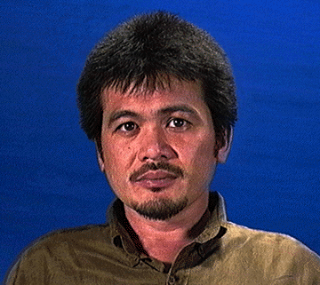

Tiene en su haber estudios a nivel Universitario de: Filosofía (UCV, 1982-1988); Estudios ambientales y de escultura (St. Lawrence Collegey Queen´s University, Canadá, 1978-1982). Ha realizado diversos cursos como: "Restauración y Conservación de colecciones" (La Habana, Cuba, 1993);
"Mosaicos y secuencias fotográficas" (Museo de Bellas Artes, Caracas, 1993);
"Taller Experimental de Pintura" (Escuela Cristóbal Rojas, 1992);
"Talla sobre piedra" (UNA, 1991). Coordina proyecto de creatividad en el Ateneo de Cumaná, talleres vacacionales en el IVIC, Cinemateca Infantíl del Museo de Los Niños, Coordinador de exposiciones del Museo de Ciencias. Dicta talleres de juguetes étnicos y folklóricos en el país, y en 1994 en Nepal. Participa entre 1984 y 1992 en exposiciones en el Estado Sucre, Fundarte, Museo de Los Niños, Museo de Bellas Artes, Galería de Arte Nacional, Museo de Ciencias y en otras salas.
Dirección: Conjunto Residencial Monte Bello, Edificio Orinoco A Número 02-A, Monte Bello, San Antonio de Los Altos, Estado Miranda. Teléfono: 032-736672.
(Fotos-video: Eduardo Caballero, Caracas).